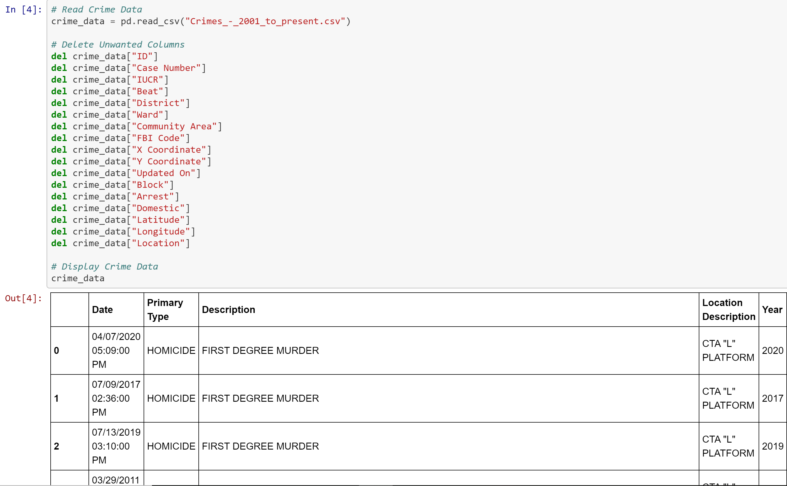

CTA Ridership vs. Chicago Crime
Inspiration
Millions of people rely on the Chicago Transit Authority everyday to to get them where they need to go. However, does increased levels of crime on the CTA cause individuals to find new methods of transportation? Additionally, do we see a trend in increased ridership as crime rate declines?
The goal of this project was to compare frequency of Chicago crime against the frequency of CTA ridership on year to year bases.
Data
Chicago provides full transparency data of all the crimes that take place in the city on their government website. The CTA also provides open source data of all ridership by year.
Extract and Transform
The extraction of the data from the sources was done using Pandas, a software in Python. Both datasets were quite sizable, with CTA data containing 6939 rows and Chicago crime dataset containing 11,580 rows. Thus, this required a good amount of cleaning up and sizing down before we began analysis.
First extract CTA ridership data and remove unwated columns.
Then extract Chicago crime data and remove unwanted columns.
Now that the data had been extracted, it was time to do a bit more cleaning up. Due to COVID-19, we decided to exclude the year 2020 ridership data. We did not feel that data from the year 2020 would provide accurate representation of normal ridership. Therefor, we needed to drop all data from after 2019.
After all of our unwanted rows and columns were removed, it was time to merge the two datasets to get out final dataset.
Data Analysis
During our analysis there were many questions that needed to be addressed. Those questions included:
- What years had the highest ridership and what days had the highest amount of crime?
- What are the top crimes we see on the CTA?
- Do the days of most and least amount of ridership coincide with days of highest and lowest crime?
- Does our data show an overall correlation?
What years had the highest ridership and what days had the highest amount of crime?

Upon plotting crime rate against CTA ridership, we found that we could see trends in the data. With the significant drop of crime in 2015 we can see an increase in ridership. Then as crime rate starts to increase again, we notice a decile in ridership. This lead us to believe we were on to a signicicant correlation.
What are the top crimes?


Theft triumphs as most popular crime in Chicago and on the CTA (first graph repsents crimes in all of chicago and second graph represents crimes on CTA). However, we believed that the crimes that would alter any sort of ridership and that would get news coverage would be violent crimes. Therefor, we decided to elliminate all crimes from our data that were not violent crimes.
What days had the highest ridership and what days had the highest amount of crime?
Any Chciago native can tell you that the busiest and roudiest days of the year udoubtably fall on days that the Chicago Cubs have a home game. Most Chicago residents will avoid any stop near Wrigley Field, because they know their fate will look like being jampacked in the train or bus with hundreds of Cubs Fans. So it was to no suprise that on November 4th of 2016, during the Cubs parade, Chicago experienced its highest crime rate and its highest amount ridership from 2001 to 2019.
Christmas day of 2004 was a quiet day for the CTA, when it experience its lowest amount of ridership from 2001 to 2019. Coincidentlty, it seems the Christmas spirit stretched all throughout Chicago that day, because Chicago also experienced its lowest amount of crime on a given day from 2001 to 2019.

Does our data show an overall correlation?
Since we seemed to be on a pretty convincing path that crime does in fact effect CTA train ridership, we decided to investigate if our data had any real statistical significance.
Results
Although our plotting lead us to believe that there could be trends leading to our hypothesis, we found no statistical sidnificance in our data. If we were to take this project further, we would look deeper into the day-by-day crime versus ridership to see if there is a signicant correlation between them on a day to day basis instead of years. We would also investigate other potenetial causes for the steep decrease in crime in 2015.